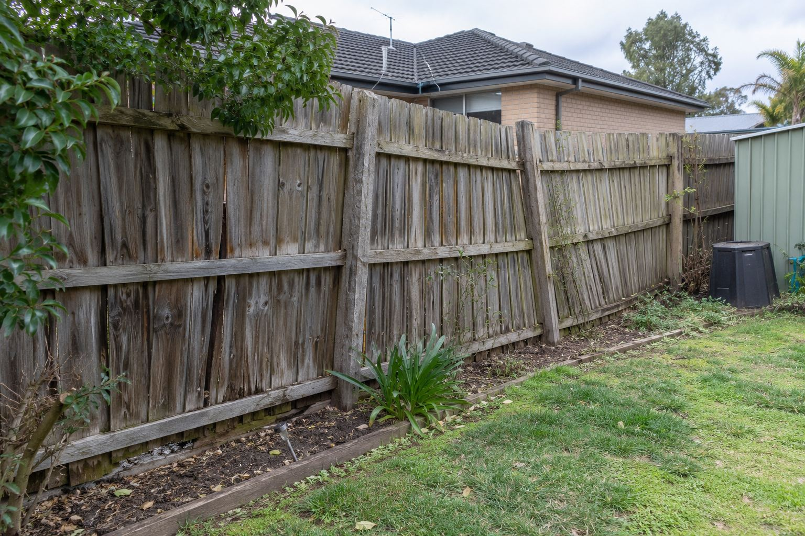
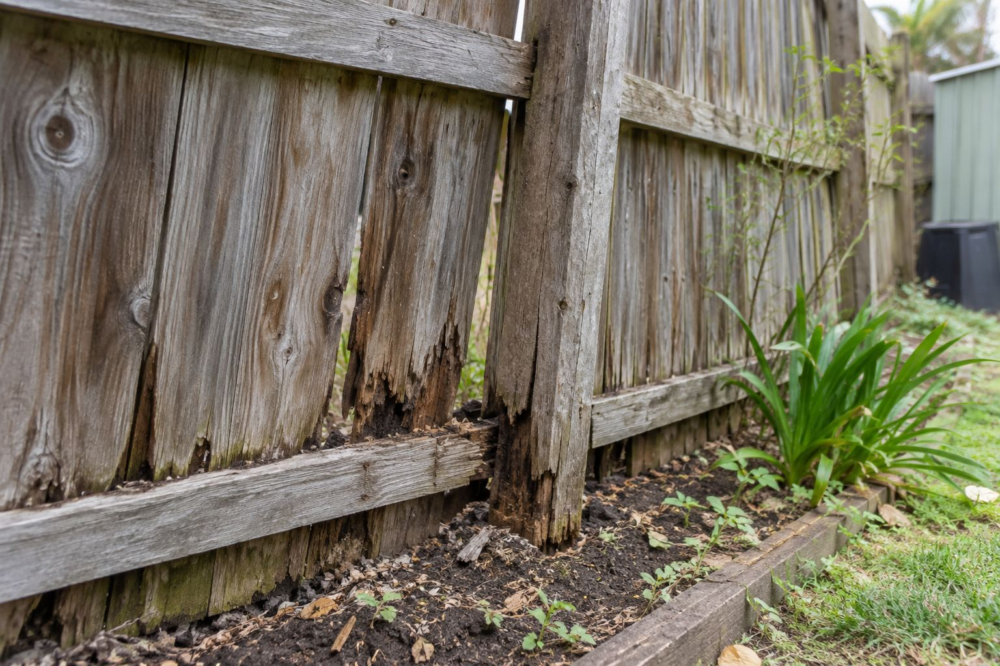
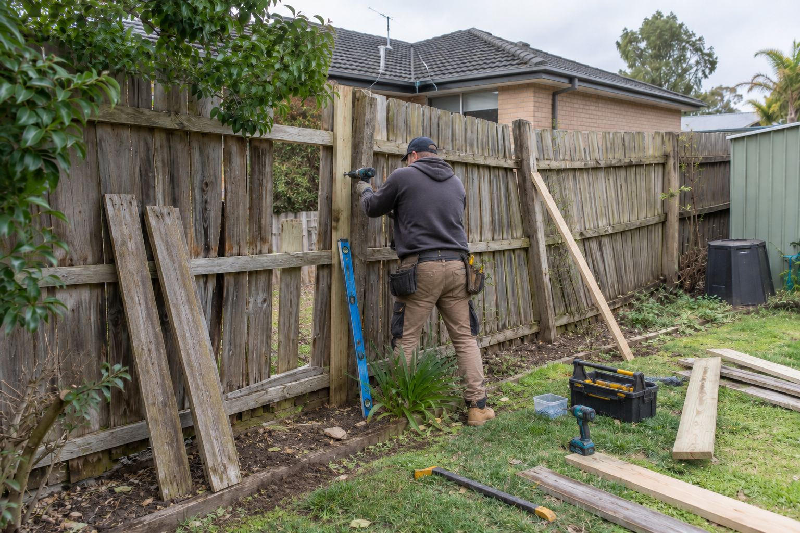

Recent project
Timber fence repair
A photographic sequence documenting a damaged sliding-door fence through to a completed fence presentation.
The project
Before, repair and completed
These images show a sliding door with damaged fence posts and panels. The sequence records the initial condition, fence repair work in progress, and the completed fence presentation.
Photos of the door overview and close-up fence damage help our team understand the location, condition and extent of the work you need.
Project gallery
Flyscreen repair shown step by step




Start your request
Tell us what needs attention
Share your fence repair task and Perth property location.